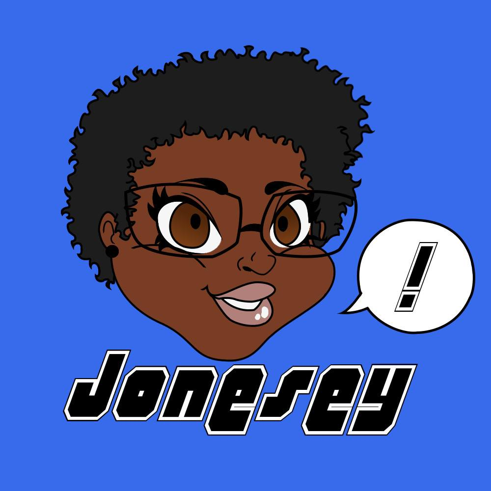
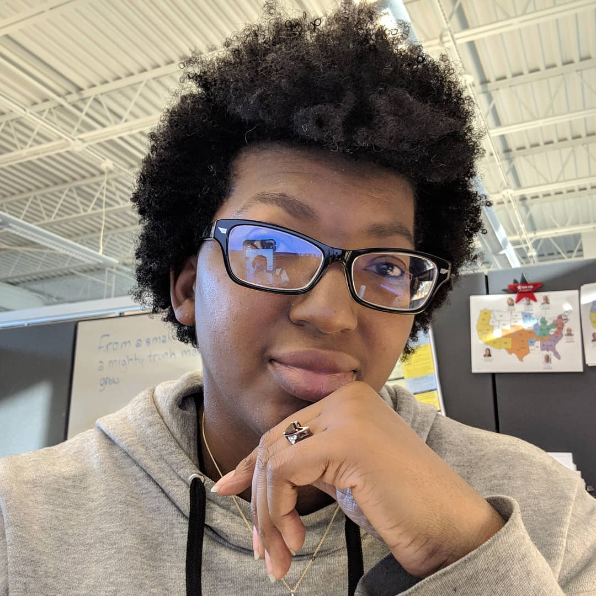

The Early Years
When I was young my parents gave me so much random advice, mostly in the form of what they have learned. One of the bits that I remember the most, is pay yourself first. Actually this piece came about when I got my first job. I didn't have any bills to pay, but it made sense when I did start having bills. I also learned on my own how to save. Again, I didn't have any bills, but I would take my paycheck, put half in my bank account, took the other half home, put half of that into a 'piggy bank', and the rest was my spending money. Later, I learned that it is definitely difficult to save once you have bills. When it came to relationships and dating, I learned that for breakups, have a cry, take a shot, then release it. Give yourself time to mourn what has ended, but realize that it has ended for a reason and it's time to let go. It took getting my heart broken twice by the same person to learn that. Also, from a young age I learned to plan, but know that your plans don't always workout. Figure out your backup.
Present Day
What I have learned now is to take things one day at a time and that not every coworker is you friend. Sometimes you have to let someone think you are the bad guy. It's crap, but when the other person won't go to therapy about their own issues, you do what you must. Do what you need to do to make you happy; get a second job, learn an instrument, learn how to code. Find what inspires you and go with it within reason. Sometimes following a passion without a plan can be ruinous. I decided at one point that I wanted to start a podcast. I did, and I chose to end it because it wasn't going the way I wanted it to. I hope to start it back up or start another eventually.
Back to the Future
For the future, I hope to learn how to keep my house clean without having to hire someone to do it or letting a mess pile up. What I have learned for the future is to continue saving, plan for the unexpected... as much as one can, always take the chance to eat new food, and always practice self care!
"